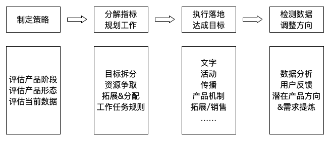

各种运营手段的划分，无非两方面，一是拉新、引流、转化，二就是用户维系。前者的具体职能例如第三方渠道推广、病毒营销、活动、新媒体、广告投放、品牌传播之类的，后者则包括客服、用户体系建设、用户激励、用户召回、运营机制设计，活动等
运营是什么？

做运营，永远要向迭代去要数据，也要依数据去做迭代
产品和运营的一些认知：
- 有坑是常态，人人皆会造坑
- 挖了坑不可怕 ，填坑能力是关键
- 尽力做到——每次都要让自己埋的坑比之前小一点点
- 每次造坑连累了队友，一定要想尽办法弥补，哪怕请客吃饭递手纸
好团队和烂团队的核心区别，就在于好团队大家互相填坑，而烂团队则是大家互坑
初级选手和中高级选手们的一个显著差别，往往就是初级选手只会被动做事情，或者是在方向不明的情况下纯靠拍脑袋去行动，但中高级选手们，一定要把事情想清楚，找到目标和更容易有所产出的地方，才会开始投入执行
运营工作中的很大一个组成部分就是如何通过不断思考、判断和执行，找到投入产出比较优的路径和方法，来达成你想要的结果
你在过去某些时候的付出和积攒下来的用户认可，总会在某个你意想不到的时刻突然迎来一个小爆发，反哺到你身上为你带来出乎意料的巨大价值
“回报后置”，强调我们专注于给用户创造价值，并相信，当你创造的价值足够多的时候，用户一定会愿意给予你无条件的认可和回报，且这种回报，有时甚至会超出你的预期
传统运营讲转化，需要以交易达成为中心
互联网运营讲用户，需要以用户价值为中心
有些事创造用户价值，但不一定一眼看得到回报；有些事情消费用户价值，但很容易带来成交和转化
唯有你创造的用户价值足够多了之后，你才有资格 去消耗它一点点
一切所谓的“牛”，最终都要回归到一个你所认可的“相信”和你所对应的行动上面
在复杂的“不确定”环境下做好运营工作的基本理念：
- 当你在一个具体项目中面临N多不确定因素的时候，其中往往存在一个最为重要的因素，它可能会成为整件事情可以顺畅发生的核心前提
- 在一个特别不确定的事情或假设面前，运营要做的最重要的事情，就是用最低的成本去搭建起来一个真实的用户应用场景，并去验证在这个场景下，用户是否会真的产生你所预期的行为
很多时候运营在做的事，就像是攒一个“局”。即，设计或假想出来一个最终可以拉动N多人一起参与一起High的事情，并一步步去让这个事情 从假想变得落地
想要成为一个优秀的运，需要：
- 1）爱上“做局”。一个可以让N多人一起参与其中并同时收获价值，在N多角色之间实现价值匹配的氛围和状态
- 2）在任何一个局面前，你一定要先能够找到它的“破局点”，并倾尽全力，通过一系列穿针引线式的动作（它们往往都必须落实到细节）使之成立和实现
一个产品，只有长期价值明确和稳定，才具备生命力
尽可能把自己变成一个真正的典型用户，让自己大量置身于真实用户的真实体验场景下，这样久而久之，你自然会慢慢拥有一种对于你的用户们的“洞察力”
假如你需要短时间内获得对方的注意力，那你可能需要先抛出一个可以让对方大吃一惊、瞠目结舌或十分好奇的观点和结论，瞬间击中对方，然后再去逐一论证你的观点是否可以成立
假如你面临着的问题是要说服对方接受一个你的观点，那么你可能更需要先从大量事实和一些细节的刻画出发，通过事实和细节引发出对方的感知、共鸣和认同，再逐步引申出你的结论
优秀的运营拿到一个问题后，会先回归到流程，先把整个问题的全流程梳理出来，然后再从流程中去寻找潜在解决方案
3个步骤来思考问题：
- 1）办公室清楚我想要的目标和结果
- 2）梳理清楚，这个问题从起始到结束的全流程是怎样的，会经历哪些主要的环节
- 3）在每个环节上，我们可以做一些什么事情，给用户创造一些不同的体验，以有助于我们最终达成期望实现的结果
必须能够把自己关注的一个大问题拆解为无数细小的执行细节，并且要能够做到对于所有的这些小细节都拥有掌控力
你的用户可以被分成哪些类别，对于每一类，在每一个体验点上我们可以使用哪些不同的运营策略和运营手段，当把诸如此类的这些事情切分和做到极致之后，你的运营指标的拉升，其实是自然而然的结果
好的运营，其实是有层次感的，你总是需要先做好做足某一件事，然后再以此为一个核心杠杆点，去撬动更多的事情和成果发生
一个特别靠谱的运营在着手解决问题开展工作的时候，会尽力让70%以上的事情变得对自己是可知可控的，只留下30%的不确定，而一个靠谱程度还没那么高的运营，则有可能正好相反
运营指标拆解+具体执行和项目管理的一部分思路也是比较相近的。事实上，因为运营要面临的工作内容往往十分繁杂，所以，是否可以有效地管理好自己的工作内容和各种事务，并把它们有机组合起来为一个大目标去服务，始终都是一个非常关键的东西
当你拿到一个混合式覅或运营指标时，遵照如下几个步骤：
- 1）要界定一下，这个指标是由哪些分支指标或哪些要素构成的，需要把你的目标指标和这些要素间的关系界定出来，最好变成一个公式的样子
- 2）这些提炼出来的分支指标或要素现在是否还存在可以提升的空间？
- 3）具体来思考，如果要提升某个分支指标，我们需要将其拆分和落实为哪些具体的运营手段？
数据的背后，其实是逻辑和推理，想要让数据可以更好地为你服务，你需要先有好的逻辑和推理分析能力
数据对于运营的价值：
- 1）数据可以客观地反映出一款产品当前的状态好坏和所处阶段
- 2）假如做完了一件事但效果不好，数据可以告诉你，你的问题出在哪里
- 3）假如你想要实现某个目标，数据可以帮助你找到达成混合式覅的最佳路径
- 4）极度精细的数据分析可以帮助你层层拆分，对用户更了解，也对整个站内的生态更有掌控力
- 5）数据当中可能隐藏着一些潜在的能让你把一件事情变得更好的线索和彩蛋，有待于你去发现和挖掘
所谓数据分析，无非就是界定清楚了你要评估的度量有哪些，然后需要知道你可能有哪些维度去看待这些度量，偶尔可能还需要在不同维度和度量间交叉做一下分析和对比，最后产出结论，把结果用图表等方式呈现出来就好了
度量就是具体的数据指标，它通常表现为某个量化过后的数据值，而维度则是去看待这些指标的不同角度
很多产品，往往都是20%的重点用户给该产品带来80%的价值，无论是分析数据还是具体开展运营工作，都要培养起来这样一个意识：要重点去关注对你最有价值的那部分用户，至少把50%左右的精力用于关注他们
“内容运营”要做的事，其实就是持续关注内容从生产到消费再到流通和传播的全过程，并通过自己撰写、编辑、组织加工、外部渠道传播等一系列手段去更好地促进这个过程的发生。要持续关注并提升各类跟内容相关的数据，如内容数量、内容浏览量、内容互动数、内容传播数等
内容，短线是尽一切努力促进内容的被消费；长线是以一系列长期、持续的内容为载体，面向用户建立起一种识别度和信任感。必须要明确 你的内容边界（如什么能写、什么不能写），并给你的内容打上某种风格化的标签。这个事叫作定位和调性
内容定位和调性，最大的难点：你必须给自己的内容调性找到显著的不同和差异所在；“调性”这个词务虚，即使真的找准了，落地到实处找到具体的发力点也很不容易
先从你的内容背后提炼出来一些棱角分明的标签，再用一系列具体、切实的行为动作去支撑起这些标签
判断一篇内容的好坏：
- 1）好的内容往往都是有自己的主线的。如果是论述型或观点型的内容，那就是观点和论据是否清晰；如果是叙事型性的内容，那就是故事脉络是不是清楚；如果是盘点总结性的内容，那就是其盘点框架是否全面清晰
- 2）在一篇内容中，逻辑较复杂或需要对比或需要传递某种特别感觉的部分，需要尽量用图表或图文的方式来表现
- 3）好的内容往往是围绕着用户的感知来进行表达和叙述的，这会让你的内容对用户而言是易读的。但凡想要抛出一个生僻概念或结论希望获得用户认可的时候，一定要通过大量事实型的描述来做好铺垫和引导
UGC型生态内容生产通路

在UGC型社区中，你也得学会持续给用户树立一些榜样，借助榜样的力量去影响和驱动他们产生你希望看到的一些用户行为
单篇内容的一个小生产流程：
选题策划=>资料收集&整理=>内容加工生产=>内容组织&呈现
选题和策划做得好不好，可能就已经决定了一篇内容60%以上的命运
写作灵感：
- 1）收集灵感：阅读、交谈、独自思考、得到某些经历后的触动
- 2）先明确内容框架，再逐次填充细节
PGC体系下，所有内容生产者都应该对你而言是相对可控的，所以，你只需把内容生产任务逐层分解拆分下去落实到人，再通过相应的机制和手段确保内容可以被按期生产出来就好了
常规内容保底、爆款内容重点突破
单篇内容的组织：

围绕用户“闲逛”式的行为，我们的内容组织解决方案可能比较适合通过信息流这种可以随意刷新、随机获取信息的方式，或者比较突出热门话题、官方推荐、最新最热等内容的方式
“目的导向”式的行为，我们的内容组织解决方案则可能更适合通过分类、加强搜索体验和导引等方式
内容的流通两个维度：
- 1）对内流通
- 内容运营人员的人为干预和组织
- 算法的智能推荐
- 依靠用户关系和用户行为
- 2）对外流通
- 产品机制、运营手段等鼓励用户自发地把一些优质内容分享到第三方外部平台
- 依赖于运营人员主观挑选一部分优质内容，将其分享到第三方平台，并获取到更多人的关注
提升短方案转化率的两个原则：傍大款（热点）、颠覆认知
中长型方案写作：
- 1）写作结构和递进逻辑

- 2）结构二

- 3）把用户在一个转化行为前可能会面临和思考的所有问题依次列出来，然后一一对问题进行解答和说服用户
那么多人在做“内容”，但真正愿意去认真考虑一下内容价值本身的人，却寥寥无几
内容本身的最大力量在于其通过持续内容输出面向用户构建起来的某种强烈的“信任感”。好的内容或一个好的媒体，承载的是信息、思想、知识、价值主张寺，而可能不是单一的资讯
内容的核心打动力，往往来自于内容生产者不同于他人的极度细致入微和深度的经历、体验和思考
做内容和写字，本质上是一种通过持续的思考和表达来连接这个世界的行为。当你可以把一件别人没有经历过的事情传递给对方从而引起对方的触动，或是当同一件事，你从不同的视角对其进行了思考，并通过你的思考和观点让别人获得了启发，这样的时刻会让你收获巨大的成就感和自我认同
标题本身带来的是一种用户预期，所以，标题可以适度放大一些内容价值，但绝不应过度
应该围绕发自内心相信的、喜欢的东西来做内容。让你的内容与你的人，尽可能是“合一”的
用户运营的核心就是开源（拉新）、节流（减少流失）、维持（提高用户活跃和留存）以及转付费
在一款互联网产品中，“用户的持续使用”才是给产品带来价值提升的核心要点
“用户运营”两类工作：
- 1）指对于较大规模的用户通过策略、机制等设计和优化进行整体运营，最终实现某个特定用户数据（通常都是活跃用户数）的上升
- 2）面向较小规模的某一类特定用户进行运营，通过该类用户在产品生态中的贡献值，从而提高产品价值
一款互联网产品往往功能众多，用户在每一个使用环节可能都会面临诸多选择，于是用户特别容易“晕菜”。最好的做法，就是要找出一条效应更高、更有助于一个普通用户成长为一个优质的活跃用户的典型用户使用路径，然后努力把用户往这条路上赶，从而带来整体活跃用户数的上升
用户属性，就是一个用户身上具备的某些与你的产品无关的自然特征，这些特征应当是可以通过标识来进行辨别的
用户关键行为，则是一个用户在你的产品站内可能会产生的一些与主要产品功能相关的使用行为
用户的分类管理：
- 1）先界定出你在站内用户身上有哪些关键属性和站内的关键行为，把对应的数据提取出来
- 2）对数据进行分析和比对，主要是在“用户属性”和“用户关键行为”之间找相关性
- 3）一旦在“用户属性”和“用户关键行为”之间找到某种明确的相关性，就可以把这类用户单拎出来作为一类，针对性地给他们推送
什么时候做用户激励？就是在你需要提升用户活跃度或需要引导用户完成某些特定行为的时候做
激励体系本身属于一种外部激励，而从游戏心理学上来说，外部刺激对于内部刺激是有挤出效应的（即因为某个状态B的出现 ，导致了一个人原有的状态A消失了）。如果发现你的用户现在本身就发自内心地挺喜欢你的某些产品功能且非常活跃死忠的话，你没有必要非得再硬生生地加上一套激励体系，这可能会让他们现有的乐趣被冲淡掉
设计一个好的激励体系的原则：
- 1）一开始尽可能简单，能做到可以刺激到现有用户即可
- 2）要尽量让用户有清晰的目标感和对目标的可掌控感
- 3）如果是做了积分或虚拟货币，一定要注意整体系统积分发放和用户积分消费之间的平衡
用户召回，简单来说，就是在你的一部分站内用户由于各种各样的原因已经不再登录访问你的产品的时候，通过某种方式去触达和影响到他们，从而再一次把他们拉回到站内，让他们重新成为有效的活跃用户
冷启动种子用户运营：
- 1）需要定位清楚你的产品适合和种子用户，并想办法找到他们
- 2）做好对于这群用户们的维系，建立起他们之间的强关系
对很多产品的冷启动来说，垂直领域内的“中小V”反而更适合成为种子用户
一款产品的用户增长主要几种来源：
- 1）依靠内容铺设带来的用户增长
- 2）第三方渠道推广&广告投放带来的用户增长
- 3）通过活动、事件等营销传播带来的用户增长
- 4）依靠PR、品牌传播等带来的用户增长
第三方渠道推广要想清楚：
- 1）第三方渠道上的信息展示规则是怎样的，如何能够让你的推广信息被展示 到这个渠道中
- 2）是否能够利用规则本身，通过你自己的某些行动来加强你的信息在该渠道中的暴光量，或者让你的信息展示变得更精准
撬动用户互动参与意愿的8个指导原则：
- 1）物质激励
- 2）概率性事件
- 3）营造稀缺感
- 4）激发竞争意识：弗洛伊德“一个人有三大硬性需求——求生本能、性冲动和渴望伟大”。竞争和比拼，永远是人的天性。你只要为它创造一个空间，这种正确性就会被激发出来
- 5）赋予用户某种炫耀、猎奇的可能性
- 6）其实和强烈情绪&认同感
- 7）赋予尊崇感&被重视感
- 8）通过对比营造超值感：给予你一个决策的理由
H5的设计：
- 1）能给用户一个“炫耀、秀自己”的理由，让用户愿意把它分享到自己的社交媒体
- 2）这个东西发到朋友圈这样的地方，能够让看到它的人产生好奇，进而与发布者产生互动，为双方都带来社交价值，进而带来新一波传播
一款产品在其早期过于关注用户增长，甚至出现“爆红”等现象，往往反而会加速其死亡
一款产品，如果在它自身的核心用户价值点还未明确、产品体验也还不够完善的时候，就要贸然去追求大量的用户增长，这对产品往往是一剂毒药
早期产品的运营，一定要围绕着“口碑”来进行
探索期产品的运营目的不是为了获取大量用户，而是为将来有一天自己能够服务好大量用户做好一切必要的准备。包括：产品功能上的、产品使用体验上的、产品风格和氛围上的、服务能力上的。运营要点：
- 挑用户：把可能对你的产品带来伤害的用户，或是你暂不具备能力服务好的用户在早期拒之门外
- 尽可能通过邀请、BD等各种手段找到一部分“活跃”、在小圈子内“有影响力”的名人领袖型用户成为你的早期种子用户，然后通过服务好他们，让他们愿意自发为你背书
- 对你的种子用户一定要给予各种额外关注
快速增长期的产品，核心目标就是能够快速获得用户增长，为了尽可能快速地占住市场，在各种推广渠道、方式上全面出击，甚至是实施大量补贴等方式，力求尽快占领市场。运营会逐渐精细起来，会开始面向不同的用户提供不同的服务，或实施不同的运营手段
成熟稳定期产品，高度关注用户活跃度，高度关注商业变现路径，面向用户的运营也开始全面精细化。进入精细运营期——针对不同的产品模块，不同类型的用户，都应该有专门的运营人员去负责，给用户提供相应服务和信息
衰退期产品，运营重点往往是老用户的维系和生命周期管理。尽可能减缓老用户流失的速度，同时持续探索新的产品方向，争取能在潜在替代产品发展起来之前，自己先能做出一款良好的替代产品
产品运营工作规划维度：
- 1）商业逻辑
- 直接面向用户售卖某种商品或服务获得赢利，核心在于：是否能找到足够好、足够多的商品，以足够低的成本、足够顺畅地将其售卖出去，并确保整体售卖流程的顺畅程度
- 免费+增值服务，核心在于：是否能获取到足够多的用户，是否能够让用户对产品形成依赖，以及是否可以更顺利地撬动用户为增值服务买单
- 免费+流量 or 数据变现，核心在于：是否能获取到足够多的用户，用户忠诚度是否足够，是否能积累下来可以持续带来新流量的数据或内容，是否可以积累下来付费方愿意为之付费的内容、数据或特定范围
- 2）典型用户行为频次，就是假如用户接受和认可了你，他使用你最核心的产品功能或服务的频次可能是怎样的
- 3）用户间是否通过产品结成某种关系
- 有一类产品，扮演的是一个“连接器”角色，其最终实现的状态，是很多不同类型的用户之间，最终通过它建立了某种关系
- 产品中的相关用户体验你可能是无法完全掌握的，因为它们在很大程度上取决于用户会在上面遇到什么样的人，经历什么样的事
- 运营工作规划中需要包含的两块：注重氛围的打造，发展也会比较慢；需要花费很大的精力来逐渐建立和完善起来一些规则、边界和约束条件
一款互联网产品，其运营体系的看你那可能会围绕着几个维度来进行思考，并完成具体运营工作的规划：
- 需要有一些基础动作可以保证产品主要业务的顺畅运转
- 在上一点的基础上，重点关注开源、节流
- 界定清楚产品内部是否存在某些关键性的用户行为
- 核心用户的界定和维系机制建立
- 阶段性通过活动、事件、营销等手段扩大产品知名度、实现用户增长
“节流”，就是尽量降低用户流失的可能性，确保尽可能多的用户能够体验到你产品的核心功能，并愿意留下来：
- 梳理出流失行为比较高发的节点
- 结合用户访谈、用户行为数据分析等各种手段定义出用户流失的原因
- 针对每个节点下用户流失的原因，定义出一系列手段用于降低流失的可能性，包括但不限于特殊福利折扣，优化流程、引导方案，设置用户流失预警机制
任何一个好的社区，一定有某种普世的价值观，这种价值观普遍是得他性且能得到广泛认同的，最终会体现在一些规则上
信任感通常产生于社区提供了超出用户期待的服务和回报之时
去中心化的常见套路：
- 1）培养和发掘追随者
- 2）通过引导，帮助社区内的用户建立起关系
企业用户不会因为“这个产品使用体验好”而决定去购买一款产品，但他们会因为“这个东西能帮我提升业务效率或能帮我省钱”而决定购买一款产品，哪怕这款产品的使用体验并不好
企业最终购买和持续使用你的2B类产品可能包括：
- 1）企业是否认可和接受企业自身存在着某些问题，且你的产品有可能帮助他们
- 2）你能否击破企业购买决策链当中的关键环节
- 3）用户在使用过程中能否真实感受到价值和效率的提升
- 4）用户是否对于你的品牌有更强的信任度，从而在整个决策流程中可以变得更加顺畅？
ABZ理论：
- 1）A计划，是一个当下你觉得值得你去持续投入，并获得部分产出和安全感的计划，好比一份你现在正在投入和人事着，且不还算满意的工作
- 2）B计划，是A计划以外，你给自己培育的某些机会。是那些当下看起来还不足以成为你的职业，但你对其存有兴趣或长远看好，值得去长期投入和关注的事情。经过你长期的沉淀和积累后，很可能会在某一天让你以之为生。
- 3）Z计划，是一个用来应对阳糟糕情况的备用计划，可以保证自己生存底线的计划。用来应对你的职业生涯中的各种不确定性和风险
从实践中持续寻求反馈，并提炼出遇到的核心问题和疑惑，去找有经验的过来人进行讨教，再持续在新的实践中进行优化改进
一个具备大局观的互联网人考虑问题，往往更注重全局性